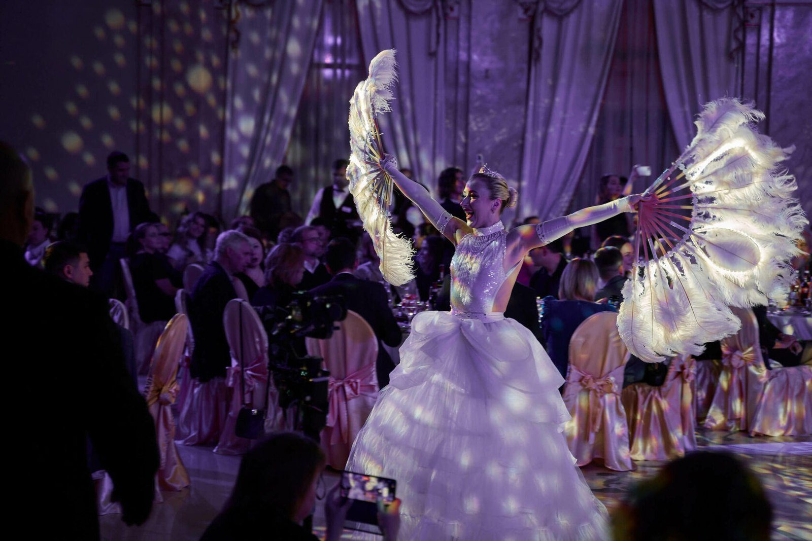
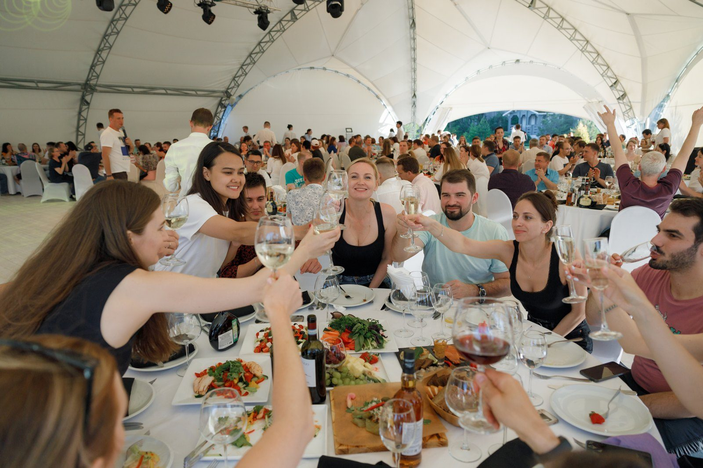
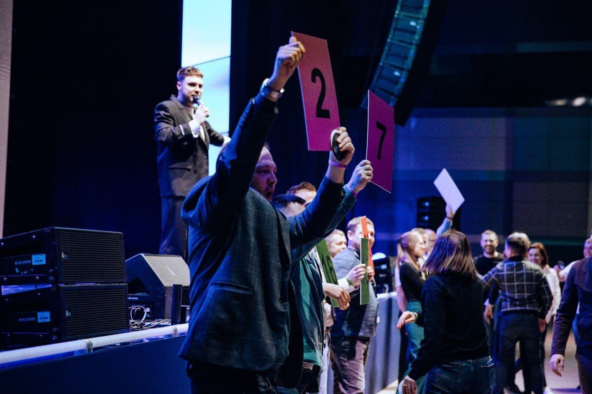
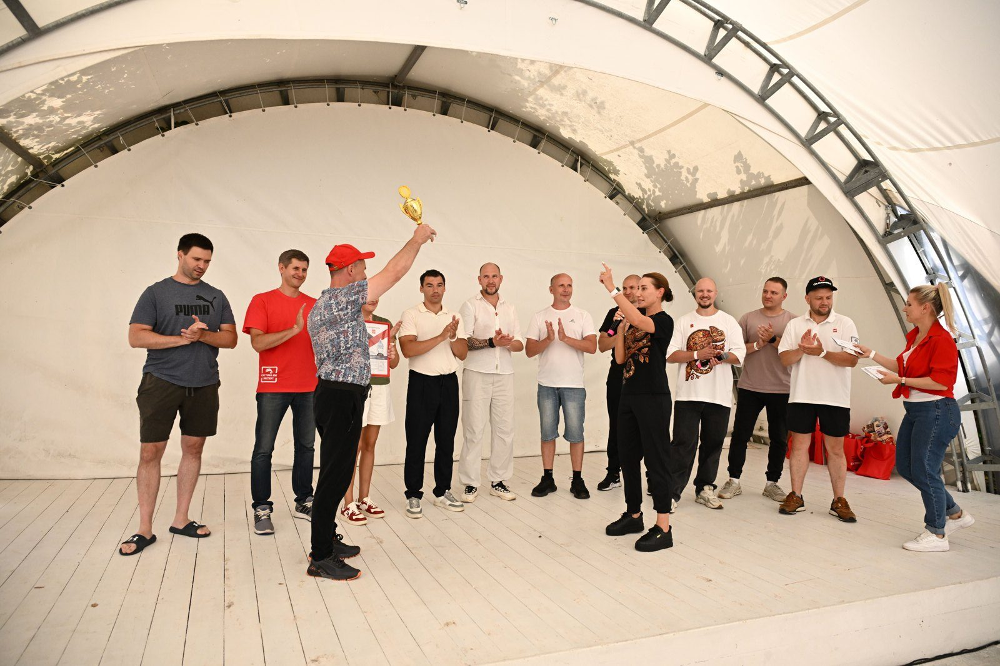
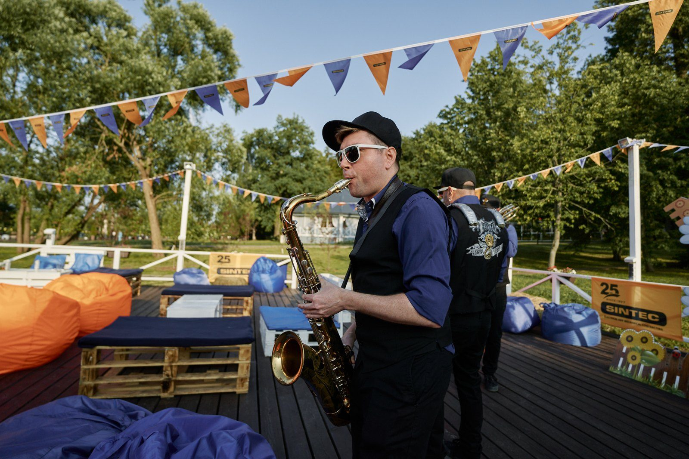
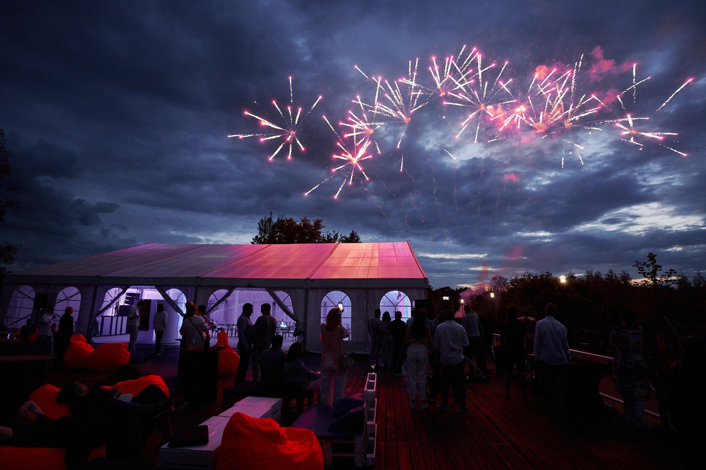
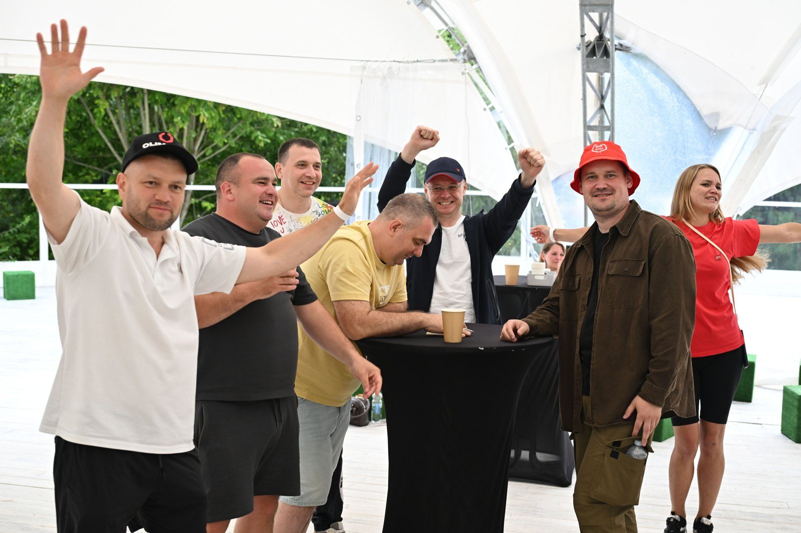

Новогодний корпоратив под ключ: что входит, как читать смету и успеть с датой

Середина ноября. Руководитель пишет в рабочий чат: «А что у нас с Новым годом?» Вы открываете три коммерческих предложения от разных агентств. Во всех написано «корпоратив под ключ», а цены и состав услуг не совпадают.
Сравнить их нельзя, пока непонятно, что прячется за словами «под ключ». Разбираем по порядку: что агентство берёт на себя, сколько времени нужно на подготовку и какие строки сметы проверить до подписи.
Сначала дата, потом всё остальное
Даты в декабре разбирают с сентября. Пятничные вечера уходят первыми: площадка одна, а компаний, которые хотят праздновать в один и тот же день, много.
От 17 ноября до 25 декабря, последней пятницы года, 38 дней. На подготовку этого хватает: обычный цикл занимает от одной до трёх недель. Но зал под вашу численность может оказаться занят раньше, чем вы согласуете бюджет.
Поэтому первый шаг простой: выбрать две-три подходящие даты и забронировать одну из них. Программу, меню и шоу можно уточнить потом.

Что значит «под ключ»
Под ключ значит, что агентство отвечает за праздник целиком, от идеи до фотоотчёта. За компанией остаются три вещи: рассказать о задаче, согласовать сценарий и подписать договор.
Что агентство берёт на себя:
- сценарий под повод и аудиторию;
- площадку: зал, лофт, загородный комплекс или теплоход;
- программу: ведущий, командная игра, шоу-номера, музыка;
- кейтеринг: от кофе-брейка до банкета;
- технику: звук, свет, экраны, сцена;
- декор и фотозону;
- логистику: трансфер гостей, монтаж и демонтаж;
- фото и видео с итоговым отчётом.
Если в предложении нет половины этих пунктов, это не обязательно плохо. Просто «под ключ» у этого подрядчика значит меньше, и остальное придётся искать самим.

Как идёт подготовка
У нас подготовка выглядит так:
- Бриф, 15 минут. Менеджер уточняет повод, дату, число гостей и бюджет.
- Сценарии и смета. Первое предложение приходит через 10 минут после разговора. Подробные 2-3 сценария с расчётом по каждому готовим за срок от 15 минут до одного дня.
- Договор. В нём программа, расписание, состав услуг и итоговая сумма.
- Площадка, 2-5 дней. Бронируем зал под численность и сценарий.
- Реквизит, до двух недель. Декорации делает наш цех.
- Праздник. Монтаж заканчиваем до приезда гостей, демонтаж и уборка уже в смете.
- Отчёт. Фото, видео и обратная связь от гостей.
Весь проект ведёт один менеджер. Вам не нужно отдельно созваниваться с площадкой, кейтерингом и диджеем.

Сколько стоит Новый год 2027
У нас три новогодних пакета. Цена указана за одного гостя:
- Камерный Новый год, до 50 гостей, от 12 000 ₽. Зал и банкет, командная игра, ведущий и диджей, Дед Мороз и Снегурочка, итоги года и награждение.
- Новый год компании, 50-200 гостей, от 9 500 ₽. Всё из камерного пакета, плюс шоу-номер, кавер-группа, новогодний декор зала, фото и видео.
- Большой праздник, 200-3 000 гостей, от 10 000 ₽. К этому добавляются сцена, свет и экраны, несколько игровых зон, артисты, салют и трансфер гостей.
Цены ориентировочные. Точную смету считаем под дату, площадку и число гостей.
Как читать смету: четыре проверки
Есть ли построчная расшифровка. Если пакет назван «Новый год компании», найдите в смете зал, банкет, игру, ведущего, шоу и фото. Одна строка «праздник под ключ» без деталей ничего не говорит.
Что посчитано отдельно. Звук оплачивают отдельно, если на площадке своего нет. Кейтеринг и трансфер часто добавляют по запросу. Это нормально, если так написано в смете заранее, а не появилось за неделю до праздника.
Чей реквизит. Собственный реквизит не зависит от чужого склада и графика аренды. У нас свой склад реквизита на 500 кв. м.
Какие документы будут. Договор, безналичная оплата, акты и счета после праздника. Для бухгалтерии это важно: без закрывающих документов расходы не провести.

Чтобы гости не просидели весь вечер за столом
Банкет, тосты и диджей знакомы всем. Гости запоминают вечер, когда сделали что-то вместе. Поэтому в любой пакет можно добавить командную игру на 2-3 часа до банкета:
- «Камера! Мотор!»: команды снимают ролики и мини-фильмы, премьера на большом экране;
- «Музыкальный Лейбл»: команды записывают треки с помощью нейросетей;
- «Фестиваль Фудтраков»: каждая команда строит свою лавку и кормит гостей;
- «Стартап» с нейросетями: команды защищают свой проект со сцены. Эта игра победила в премии BEMA 2025.
После игры у команды остаётся общий результат: фильм, трек, фото у своего фудтрака. О нём говорят и после праздника. Вот как командные игры выглядят вживую, это шоурил наших проектов:

Пять вопросов подрядчику до договора
- Кто будет ведущим и можно ли посмотреть видео с его проектов?
- Чей реквизит и декор: собственный или арендный?
- Кто отвечает за площадку в день праздника и как с ним связаться?
- Что будет, если число гостей изменится за неделю до даты?
- Когда придут фото, видео и закрывающие документы?
Если на какой-то вопрос подрядчик отвечает расплывчато, уточните ответ письменно и внесите в договор.
Короткий ролик о том, зачем вообще нужны командные игры на празднике:

Шпаргалка
- Бронируйте дату сейчас, детали программы уточните позже.
- Сравнивайте предложения по составу услуг, а не по итоговой сумме.
- Ищите в смете строки «отдельно» и «по запросу».
- Задайте пять вопросов из списка выше до подписи.
Каталист проводит корпоративы и тимбилдинги с 2010 года. За это время мы провели 4 800 проектов, получили 16 наград ивент-индустрии и собрали 50+ авторских программ. Ведущих готовит наша школа, реквизит делает свой цех.
Если хотите узнать, свободна ли ваша дата в декабре, оставьте заявку на catalystrussia.ru или напишите нам в Telegram или Max. Первое предложение пришлём за 10 минут.
новогодний корпоративкорпоратив под ключHRивентыНовый год 2027